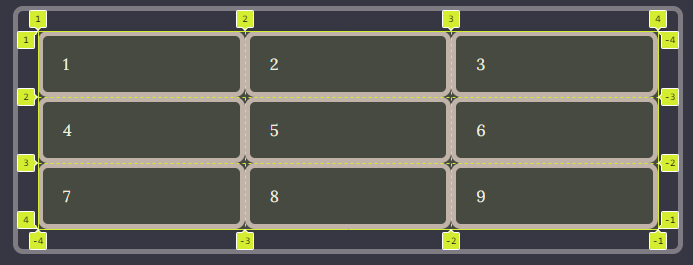
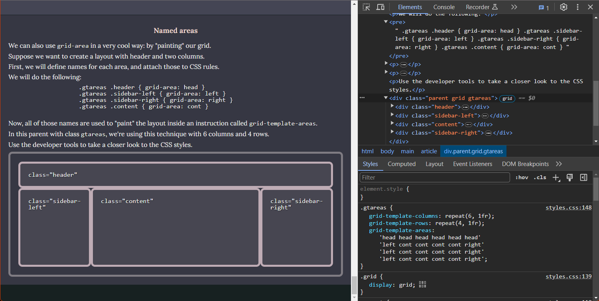

Examine these examples using the Developer Tools in your browser.
A "default" grid
Here, the parent has display: grid and nothing else. It automatically defines one column, plus one row per child.
It looks the same as a flow layout at this point!
Item 1
Item 2
A very very very long item
The behavior of the children changes if we force the parent to be higher: here the parent has height: 600px.
Each one will be as big as the cell it falls in.
Item 1
Item 2
A very very very long item
Defining columns
Here we define grid-template-columns: 25% 75%;
First column gets the 25%
Second column gets the 75%
A very very very long item
Widths can be expressed in any way.
If the expressed widths are not enough to fill the parent's space, we get a gap.
Here we define grid-template-columns: 100px 200px
First column gets 100px
Second column gets 200px
This falls into the first column
Use auto to create a column that fills the gap.
Here we define grid-template-columns: 100px 200px auto
First column gets 100px
Second column gets 200px
Third is "auto" so it gets the rest
Here we define grid-template-columns: 1fr 4fr;. fr means "fraction". The higher the number, the bigger the column.
First column gets 1fr (1 out of 5 parts)
Second column gets 4fr (4 out of 5 parts). 5 parts because 1fr + 4fr = 5.
A very very very long item
Same example, without content inside the cells. The cell width does not get affected by the content.
Defining rows
While rows will automatically be created if columns are defined, we can also define them with grid-template-rows. This gives us control on, for example, their height.
Here we define grid-template-columns: 1fr 4fr; grid-template-rows: 2fr 1fr
If there are more cells than what the columns and rows define, new "default" rows are automatically created.
Here we define grid-template-columns: 1fr 4fr; grid-template-rows: 1fr 3fr
The repeat keyword
If your columns or rows are the same, you can use the repeat keyword to make your CSS shorter.
The two next parents are equivalent. This one creates 9 columns of the same size with grid-template-columns: 1fr 1fr 1fr 1fr 1fr 1fr 1fr 1fr 1fr
This one does the same but with grid-template-columns: repeat(9, 1fr)
Align content, justify content
In grid we can do the same as in flexbox to move children through a main "axis".
This parent has height: 600px; align-content: center
Item 1
Item 2
A very very very long item
This parent has height: 600px; grid-template-columns: 25% 75%; align-content: center
First column gets the 25%
Second column gets the 75%
A very very very long item
This parent has height: 600px; align-content: space-evenly
First column gets the 25%
Second column gets the 75%
A very very very long item
We can justify content, too. This parent has height: 600px; justify-content: end
First column gets the 25%
Second column gets the 75%
A very very very long item
For more details on align-content and justify-content, see the flexbox demos.
Gaps
Same as with flexbox, we can define the spacing between cells with the gap keyword.
With no gap:
1
2
3
4
5
6
7
8
9
With gap: 1rem:
1
2
3
4
5
6
7
8
9
We can also define column-gap and row-gap separately.
The following parent has row-gap: 0.5rem; column-gap: 3rem:
1
2
3
4
5
6
7
8
9
We can put both values in gap, as such: gap: (row-gap) (column-gap).
For example, this parent has gap: 3rem 0.5rem for the same effect as above:
1
2
3
4
5
6
7
8
9
Line-based placement
For the following parents we are defining a 3x3 grid (3 columns, 3 rows).
1
2
3
4
5
6
7
8
9
Imagine the lines that divide this grid. There are four vertical lines and four horizontal lines. We will number them from 1 to 4: from left to right and from top to bottom.
The grid analyzer of Chrome's developer console shows it like this:

The horizontal and vertical lines where cells start and end are highlighted and numbered.
Now we can define cells that are bigger than one row x one column.
We can use these line numbers as reference to tell the browser where a cell starts and ends.
Note that since we defined three columns, we have four vertical lines. Same for rows: three rows, four vertical lines.
There is also a shorthand for writing these things: grid-column and grid-row.
In both cases, the value is start line / end line. For a size of 1, you can just write the start line.
grid-column: 1; grid-row: 1
(same as default)
grid-column: 2 / 3; grid-row: 2 / 3
grid-column: 3 / 4; grid-row: 3 / 4
grid-column: 1 / 2; grid-row: 2 / 4;
grid-column: 3 / 4; grid-row: 1 / 4;
grid-column: 1 / 4; grid-row: 3 / 4;
Alternatively, instead of writing in what line the cell ends, we can write how many columns (or rows) big it is. For this, write (start line) / span (size):
grid-column: 1 / span 1; grid-row: 2 / span 2;
grid-column: 3 / span 1; grid-row: 1 / span 3;
grid-column: 1 / span 3; grid-row: 3 / span 1;
span 1 is the default for the endso we can also just say:
grid-column: 1; grid-row: 2 / span 2;
grid-column: 3; grid-row: 1 / span 3;
grid-column: 1 / span 3; grid-row: 3;
span (number) can also be used with grid-row-end and grid-column-end for the same effect.
But there is an even shorter way of writing these values: grid-area.
Use it like this: grid-area: (grid-row-start) / (grid-column-start) / (grid-row-end) / (grid-column-end).
grid-area: 2 / 1 / 4 / 2;
grid-area: 1 / 3 / 4 / 4;
grid-area: 3 / 1 / 4 / 4;
You can also use span (number) on the -end values.
grid-area: 1 / 1 / 2 / span 2;
Named areas
We can also use grid-area in a very cool way: by "painting" our grid.
Suppose we want to create a layout with header and two columns.
First, we will define names for each area, and attach those to CSS rules.
We will do the following:
.header { grid-area: head }
.sidebar-left { grid-area: left }
.sidebar-right { grid-area: right }
.content { grid-area: cont }
Now, all of those names are used to "paint" the layout inside an instruction called grid-template-areas.
In this parent with class gtareas, we're using this technique with 6 columns and 4 rows.
Use the developer tools to take a closer look to the CSS styles.
class="header"
class="sidebar-left"
class="content"
class="sidebar-right"
This is what my Developer Tools show here:

Note the grid-template-areas in the styles shown by Developer Tools.
Now we'll define a similar grid, but with an empty space.
To "paint" empty spaces, use the period (".").
.gtareas-2 {
grid-template-columns: repeat(6, 1fr);
grid-template-rows: repeat(4, 1fr);
grid-template-areas:
'head head head head head head'
'. . cont cont cont right'
'. . cont cont cont right'
'. . cont cont cont right';
}
class="header"
class="content"
class="sidebar-right"
Note that your areas must be rectangular.
Also, you must define a value for each one of the cells in your grid, no missing values.
If you break these rules, the whole grid-template-areas will be invalid and you will have trouble.
For example:
.gtareas-broken {
grid-template-columns: repeat(6, 1fr);
grid-template-rows: repeat(4, 1fr);
grid-template-areas:
'head head head head head head'
'. . cont cont cont right'
'. cont cont cont cont right'
'. cont cont cont cont right';
}
class="header"
class="content"
class="sidebar-right"
There is a shorthand, grid-template, to define all three (rows, columns, areas).
In grid-template, we define each row's areas and then the size of the row.
Then, we add a / and the size of each column.
Let's redo the first named grid we did:
.gtareas-short {
grid-template:
'head head head head head head' 1fr
'left cont cont cont cont right' 1fr
'left cont cont cont cont right' 1fr
'left cont cont cont cont right' 1fr
/ 1fr 1fr 1fr 1fr 1fr 1fr;
}